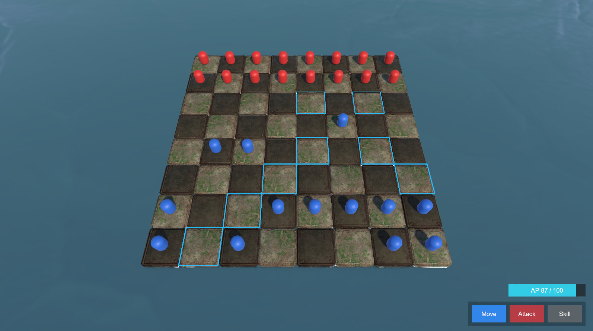
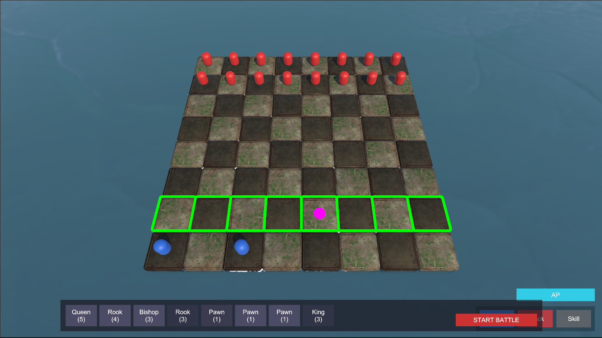
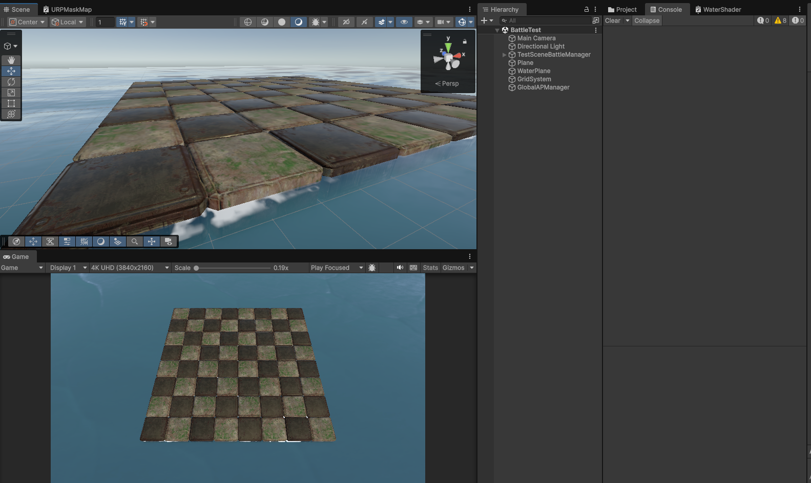
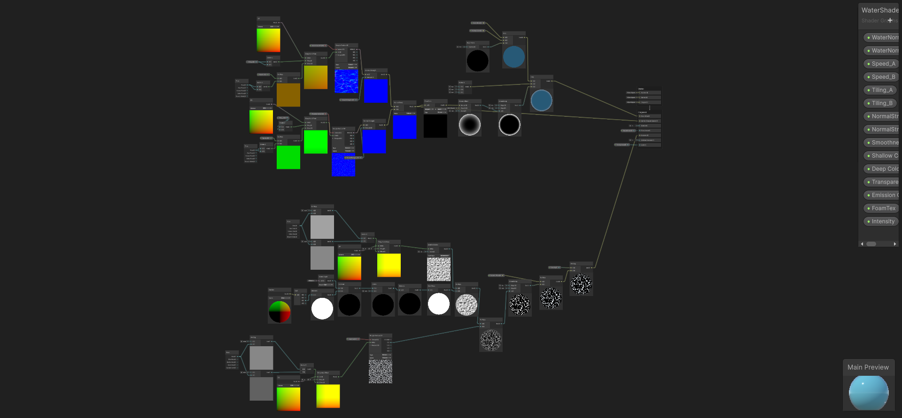
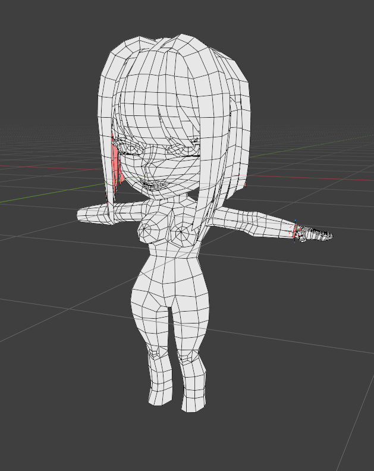
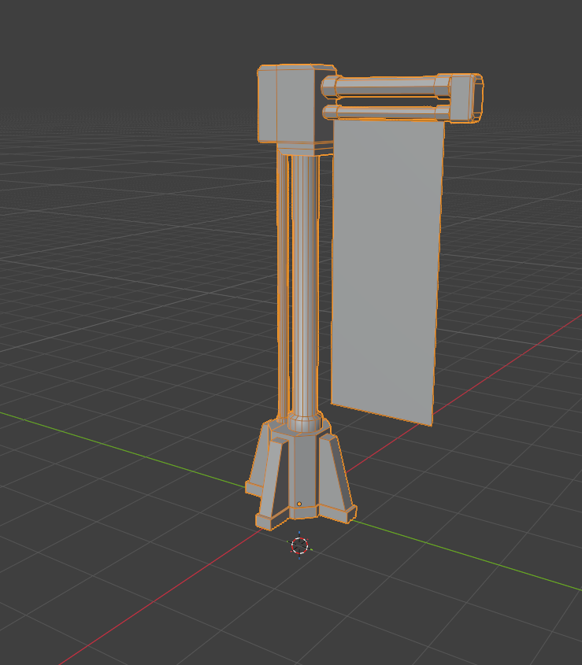
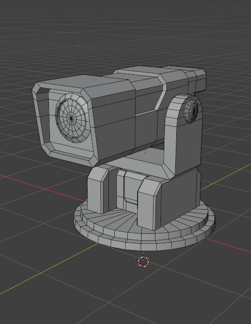
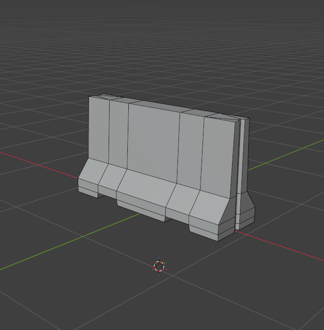

전술 보드
체스 직군
팩션 진영
원소 반응
| 장르 | 실시간 전술 체스 RPG |
|---|---|
| 엔진 | Unity 6000.3.10f1 |
| 렌더링 | Universal Render Pipeline (URP) |
명일방주(Arknights)식 시스템 뎁스에 정통 체스(Chess)의 공간 전술을 결합.
플레이어는 전장의 킹(King). AP는 마스터의 '전술 연산력'이며, 킹 사망 시 부대원 링크 붕괴로 게임 오버.
3대 진영 특성:
All-Deployed Start
전투 시작 시 어떠한 소환도 없이 전원이 보드에 배치된 채로 교전 돌입. 코스트 대기 없는 즉각적인 쾌도난마식 지휘.
AP Economy
모든 이동/공격에 중앙 글로벌 AP 풀을 소모. 자연회복과 처치 환불로 저비용 폰과 고비용 퀸 간의 자원 관리 압박 제공.
• 전방 1칸 이동
• 대각 전방 공격
• 8열 도달 시 프로모션
• L자 점프 이동
• 지형 장애물 통과
• 후방 암살 특화
• 대각선 슬라이딩
• 중장거리 마법/저격
• 가로/세로 슬라이딩
• 무거운 체급, 넉백
• 최강의 탱커 라인
• 8방향 슬라이딩
• 세계관 최강의 파괴력
• 극심한 AP 소모
• 주변 1칸 8방향
• 죽으면 즉시 패배
• 플레이어 아바타
밀어낸 거리만큼 날아가 타 기물이나 벽에 부딪히면 Max HP 10%의 True Damage 발생. 가벼운 유닛을 룩(Rook)으로 밀어쳐서 치명타를 입히는 당구식 플레이 유도.
늪지대: 이동 비용 2배
가시밭: 매초 방어 무시 HP 3% 타격
성역: 방어 15% 버프 및 체력 회복
화염+얼음 = 폭발 (십자 넉백)
번개+얼음 = 초전도 (방깎 40%)
얼음+얼음 = 빙결 (완전 제어)
Hard CC: 기절 (모든 행동 취소, 지속 중 해당 유닛의 SP 회복 중단)
AI 점수: King 처치각(+1000) 우선, 광전사/전략가/수비형 3분할 틱 알고리즘.
Deep Dive: System Script & Extensible Architecture
"단순 하드코딩이 아닌, 확장에 열려있는(Open-Closed) 탄탄한 1인 개발 백엔드 구조 구현에 집중했습니다."
UnitBrain (ActionBid) / AITeamCommander
ActionScheduler / InterruptArbitration / APManager
GridManager / ReactionSystem / StatusEffect
SimulationSnapshot / SeededRandomProvider
퀸(Queen)이나 룩(Rook)의 광역 슬라이딩 연산 시 발생하는 병목을 막기 위해 64개 타일을 1차원 배열로 압축 관리합니다.
public class GridManager {
private TileData[] _tiles = new TileData[64];
// y * 8 + x 를 비트 시프트로 연산 (인라인 처리)
[MethodImpl(MethodImplOptions.AggressiveInlining)]
public int ToIndex(int x, int y) => (y << 3) | x;
public bool TryGetOccupant(int x, int y, out Unit unit) {
int idx = ToIndex(x, y);
if(idx < 0 || idx > 63) { unit = null; return false; }
unit = _tiles[idx].Occupant;
return unit != null;
}
}모든 AI가 매 틱마다 보드 상태를 시뮬레이션(Look-ahead) 하므로, 보드 접근 비용이 O(1)에 가깝게 빨라야만 렉 없이 수백 개의 유닛 연산을 소화할 수 있습니다.
public class APManager : MonoBehaviour {
private float _currentAP, _maxAP = 100f;
private const float REGEN_RATE = 4f;
void Update() {
_currentAP = Mathf.Min(_currentAP + REGEN_RATE * Time.deltaTime, _maxAP);
}
public bool TrySpend(float cost) {
if (_currentAP < cost) {
// 직접 UI 객체를 참조하지 않고 이벤트 발송
EventBus.Publish(new InsufficientAPEvent());
return false;
}
_currentAP -= cost;
return true;
}
}AP가 부족할 때 UI 스크립트를 GetComponent로 찾아 에러 메시지를 띄우는 나쁜 관행을 배제했습니다. 제네릭 EventBus<T>를 사용하여 종속성을 끊었습니다.
public enum ActionState { Pending, Preparing, Executing, Recovery }
public void TickAction(ActionContext ctx) {
switch (ctx.State) {
case ActionState.Preparing:
if (CheckInterrupts(ctx.Owner)) {
CancelAction(ctx); // 기절 피격 시 즉시 취소
return;
}
if (ctx.Timer >= ctx.Skill.CastTime) {
ctx.State = ActionState.Executing;
FireSkillPayload(ctx);
}
break;
}
}public static IMovePattern Create(PieceClass piece) {
return piece switch {
PieceClass.Pawn => new PawnMovePattern(),
PieceClass.Knight => new KnightMovePattern(),
PieceClass.Bishop => new SlidingMovePattern(Diagonal),
PieceClass.Rook => new SlidingMovePattern(Orthogonal),
PieceClass.Queen => new SlidingMovePattern(All),
PieceClass.King => new KingMovePattern(),
_ => throw new NotImplementedException()
};
}
▲ 비숍(Bishop) 클릭 시 대각선 이동 경로 스캐닝 결과
public void ApplyElement(Unit t, ElementType incoming) {
var reaction = ReactionTable.Lookup(t.CurrentElement, incoming);
if (reaction != null) {
if (reaction.ImmediateDamage > 0)
DealMagicDamage(t, reaction.ImmediateDamage);
if (reaction.StatusEffect != null)
StatusEffectSystem.Apply(t, reaction.StatusEffect);
t.CurrentElement = ElementType.None; // 반응 소모
} else {
t.CurrentElement = incoming; // 태그 부착
}
}현재 14가지가 넘는 원소 콤보와 상태이상이 존재합니다. 이를 하드코딩된 `if-else`로 짜지 않고 `ReactionTable` (딕셔너리)을 이용한 룩업(Lookup) 방식으로 구현했습니다.
public struct ActionBid : IComparable<ActionBid> {
public UnitBrain Bidder;
public ActionType Type; // MOVE, SKILL
public float Score; // Look-ahead 예측 점수
public float APCost;
// 우선순위 큐 정렬을 위한 기본 인터페이스 구현
public int CompareTo(ActionBid other)
=> other.Score.CompareTo(this.Score);
}모든 적 AI는 PredictionPipeline을 돌려 "이 행동을 하면 점수가 몇점인지" 스스로 채점해 보고서를 제출합니다.
사령관 코어는 수집된 수백 개의 행동 보고서를 점수 순으로 정렬(Sort)한 뒤, 진영에 남은 AP 한도 내에서 위에서부터 순서대로 승인 결재를 내립니다.
매 틱마다 보드 전체의 런타임 상태를 저장하여 리플레이 및 역추적(Rollback)을 가능하게 하는 구현체입니다.
[Serializable]
public struct SimulationSnapshot {
public int TickFrame; // 현재 틱
public uint Checksum; // 무결성 검증 해시
public float GlobalAP;
public UnitDataSnapshot[] Units;
}UnityEngine.Random은 부동소수점 오차가 나므로, 통제된 시드(Seed)를 써서 언제 어디서든 동일한 전황을 재현합니다.
원격 멀티플레이어로의 확장을 염두에 두고, 리플레이 재생 중 원본과 단 1의 해시 오차라도 발생하면 즉시 Desync 경고를 띄웁니다.
public class PoolManager : Singleton<PoolManager> {
private Dictionary<string, Queue<GameObject>> pool;
public GameObject Spawn(string key, Vector3 position) {
if(pool[key].Count > 0) {
var obj = pool[key].Dequeue();
obj.SetActive(true);
obj.transform.position = position;
return obj;
}
return Instantiate(Resources.Load(key)) as GameObject;
}
}원소 마법, 타격 데미지 텍스트 팝업, 폭발 이펙트 등 초당 수십 개가 생성되고 파괴되는 오브젝트들을 Instantiate/Destroy 하지 않습니다.
public List<Tile> FindPath(Tile start, Tile target) {
// G(이동비용) + H(휴리스틱 맨해튼 거리) 연산
var openSet = new PriorityQueue<Node>();
foreach (var neighbor in currentNode.GetNeighbors()) {
int tentativeGCost = currentNode.GCost
+ neighbor.TerrainWeight; // 늪지대는 2배 코스트
if (tentativeGCost < neighbor.GCost) {
neighbor.UpdatePath(currentNode, tentativeGCost);
}
}
return RetracePath(start, target);
}단순히 직선으로 돌격하는 것이 아니라, 늪지대(코스트 2배)나 불길이 있는 타일을 우회하는 최적의 경로를 A* (A-Star) 알고리즘으로 동적 계산합니다.
public float CalculateFinal(Unit target, DamageType type) {
float finalDmg = BaseDamage;
if (type == DamageType.Physical) {
// 물리: 직관적인 감산 (최소 데미지 보장)
float effectiveArmor = target.Armor * (1 - Penetration);
finalDmg = Mathf.Max(1f, finalDmg - effectiveArmor);
}
else if (type == DamageType.Magical) {
// 마법: 저항력(%) 비례 퍼센트 경감
float resistPct = target.MagicResist * (1 - Penetration);
finalDmg *= (1f - (resistPct / 100f));
}
return finalDmg * GetElementalMultiplier(target);
}물리 피해는 `피해량 - 방어력`의 직관적인 뺄셈 연산으로 체급 차이를 부각시키고, 마법/원소 피해는 저항력(%) 퍼센트 경감 구조를 채택하여 밸런싱의 다양성을 확보했습니다.
[CreateAssetMenu(menuName = "Checkmate/UnitData")]
public class UnitData : ScriptableObject {
public string UnitName;
public PieceClass Role;
public FactionType Faction;
[Header("Base Stats")]
public float MaxHP;
public float BaseArmor;
[Header("Skills")]
public SkillData PassiveSkill;
public SkillData ActiveSkill;
}기물들의 능력치를 스크립트 안에 하드코딩하지 않고, 유니티의 ScriptableObject 에셋으로 분리하여 중앙 데이터베이스처럼 관리합니다.
public class HealthBarView : MonoBehaviour {
[SerializeField] private Image fillImage;
private UnitModel _model;
public void Bind(UnitModel model) {
_model = model;
// 이벤트 구독 (옵저버 패턴)
_model.OnHealthChanged += UpdateFillAmount;
}
private void UpdateFillAmount(float current, float max) {
// DOTween 등 애니메이션 엔진과 연동하여 스무딩
fillImage.DOFillAmount(current / max, 0.3f);
}
}매 프레임마다 체력을 감시하는 Update() 함수를 완전히 제거했습니다. 체력이나 AP가 변동될 때만 이벤트를 발송하여 UI가 반응합니다.

▲ 전원 배치 화면: 하단 덱 UI, AP 게이지 바 연동

▲ 폐허 타일 프리팹 (URP 렌더링)

▲ URP Shader Graph 수면 굴절·거품 커스텀
전술적 식별성을 높이기 위한 프랍 중심의 디자인. 자체 모델링 에셋 제작 현황입니다.




체스 이동 규칙 × 실시간 AP 경제 × 물리/원소 반응
[무한한 확장이 가능한 객체지향 넷코드 백엔드 적용]